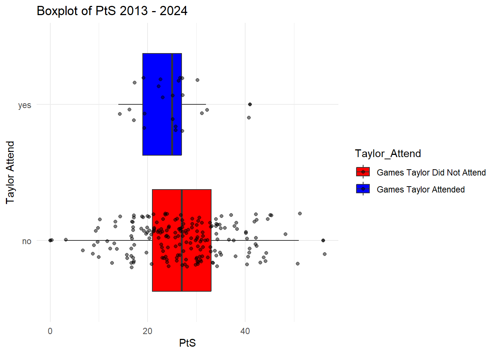
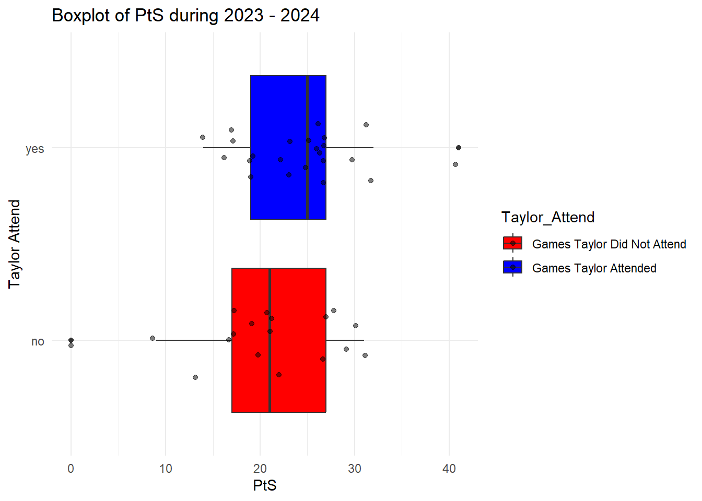
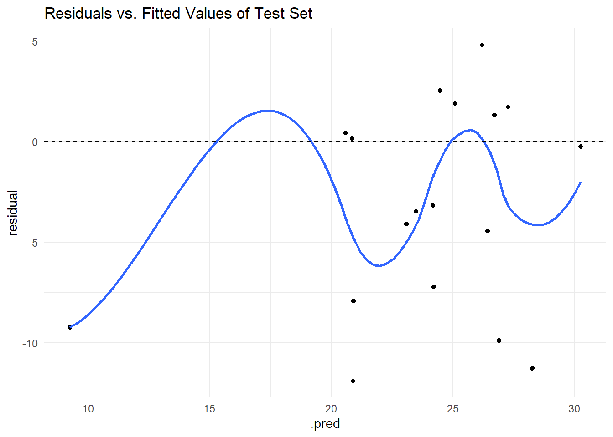
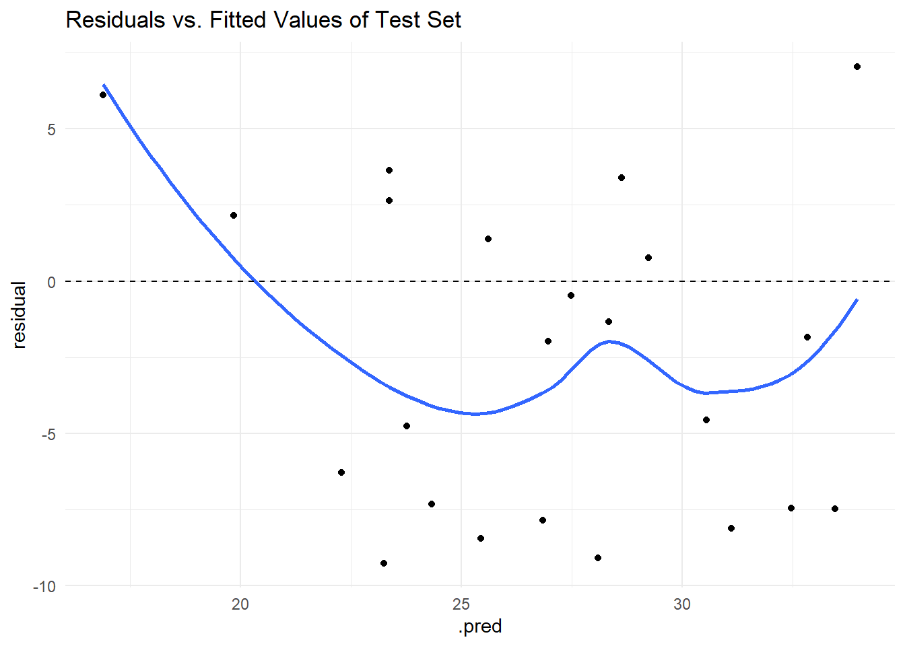

library(tidyverse)
library(kknn)
library(Lahman)
library(probably)
library(knockoff)
library(selectiveInference)
library(tidymodels)
library(modeltime)
library(readr)
library(stringr)
library(ggplot2)
library(dplyr)Replace this with an interesting title
Motivation and Context
Over the past 3 years I’ve become interested in fantasy football. This has lead me to explore football statistics in order to better predict the performance of players and teams. I’ve also grown up with two sisters who have been die hard Taylor Swift fans their whole lives. Though these two facts about my life seem to be unrelated however, If you’ve watched a Kansis city chiefs game in the past two years or heard any news at all about Taylor Swift, you would know that they are unfortunately very related. The world was set ablaze in September 2023 when Taylor Swift and Travis Kelce announced they were in a relationship. Ticket and Travis Kelce Jersey revenue skyrocketed as the market was introduced to millions of Swifties trying to secure the latest Taylor Swift clout so they could where it to her next show. As their high profile relationship continues, I am curious to see how this relationship would effect the Kansas City Chiefs Performance.
Main Objective
How does Taylor Swift’s attendance at Kansas City Chiefs games effect the offensive performance.
Packages Used In This Analysis
| Package | Use |
|---|---|
| here | to easily load and save data |
| readr | to import the CSV file data |
| dplyr | to massage and summarize data |
| rsample | to split data into training and test sets |
| ggplot2 | to create nice-looking and informative graphs |
Data Description
The data I will be using is Kansas City Chiefs season performance statistics form https://www.pro-football-reference.com/ from 2013 to 2024. This data is collected from the staff of Pro Football Reference. It is collected in order for fans to better understand th teams they love and support. This site is the leading football statistical reference site, and is sited by many others. I am constricting data to 2013 - 2024 since 2013 is when Patrick Mahomes was drafted onto the Kansas City Chiefs ans started a new era of their franchise. Some key variable sin this data is: Points Scored, Points Allowed, Total Yards, Total Passing Yards, Totaly Rushing Yards and Touchdowns.
kcc_g_16 <- read_csv("C:/Users/caleb/OneDrive/Desktop/School/Math 437/Final Project/Project Data/kcc_g_16.txt", show_col_types = FALSE)
kcc_g_24 <- read_csv("C:/Users/caleb/OneDrive/Desktop/School/Math 437/Final Project/Project Data/kcc_g_24.txt", show_col_types = FALSE)
kcc_g_23 <- read_csv("C:/Users/caleb/OneDrive/Desktop/School/Math 437/Final Project/Project Data/kcc_g_23.txt", show_col_types = FALSE)
kcc_g_22 <- read_csv("C:/Users/caleb/OneDrive/Desktop/School/Math 437/Final Project/Project Data/kcc_g_22.txt", show_col_types = FALSE)
kcc_g_21 <- read_csv("C:/Users/caleb/OneDrive/Desktop/School/Math 437/Final Project/Project Data/kcc_g_21.txt", show_col_types = FALSE)
kcc_g_20 <- read_csv("C:/Users/caleb/OneDrive/Desktop/School/Math 437/Final Project/Project Data/kcc_g_20.txt", show_col_types = FALSE)
kcc_g_19 <- read_csv("C:/Users/caleb/OneDrive/Desktop/School/Math 437/Final Project/Project Data/kcc_g_19.txt", show_col_types = FALSE)
kcc_g_18 <- read_csv("C:/Users/caleb/OneDrive/Desktop/School/Math 437/Final Project/Project Data/kcc_g_18.txt", show_col_types = FALSE)
kcc_g_17 <- read_csv("C:/Users/caleb/OneDrive/Desktop/School/Math 437/Final Project/Project Data/kcc_g_17.txt", show_col_types = FALSE)
kcc_g_16 <- read_csv("C:/Users/caleb/OneDrive/Desktop/School/Math 437/Final Project/Project Data/kcc_g_16.txt", show_col_types = FALSE)
kcc_g_15 <- read_csv("C:/Users/caleb/OneDrive/Desktop/School/Math 437/Final Project/Project Data/kcc_g_15.txt", show_col_types = FALSE)
kcc_g_14 <- read_csv("C:/Users/caleb/OneDrive/Desktop/School/Math 437/Final Project/Project Data/kcc_g_14.txt", show_col_types = FALSE)
kcc_g_13 <- read_csv("C:/Users/caleb/OneDrive/Desktop/School/Math 437/Final Project/Project Data/kcc_g_13.txt", show_col_types = FALSE)Data Limitations
When choosing a response variable based on this data set is a little tricky. The natural two to select are touchdowns and Points scored. Although using these variables as an offensive indicator of success is misleading since they do not take into account who the opposing team is. Scoring a massive amount of points against the New York giants (worst in league) may be less impressive than and average amount of points scored against the Detroit Lions (best in League). A better indicator of offensive success is how a team did reltive to their predicted score. This data does not have this predicted score data we need.
This data also does not indicate whether Taylor Swift attended the game or not. We will have to find this info and input it in the data in oour data wrangling phase.
The data frames also have unnamed colums and rows with there actual names being observations, We will need to convert the column and row names to the righ ones.
Data Wrangling (Optional Section)
file_paths <- list.files(path = "C:/Users/caleb/OneDrive/Desktop/School/Math 437/Final Project/Project Data",
pattern = "kcc_g_.*\\.txt$", full.names = TRUE)
new_col_names <- c("Week", "Day", "Date", "Time", "Boxscore", "Outcome", "OT", "Rec",
"Location", "Ppp", "PtS", "PtA", "FirstD", "TotYd", "PassY", "RushY",
"TO", "FirstD_Alwd", "TotYd_Alwd", "PassY_Alwd", "RushY_Alwd",
"TO_Alwd", "ExOff", "ExDef", "ExSpec")
kcc_data <- lapply(file_paths, function(file) {
df <- read_csv(file, skip = 1, show_col_types = FALSE) # Read the file
colnames(df) <- new_col_names # Rename columns
year_suffix <- str_extract(basename(file), "\\d{2}")
full_year <- as.integer(paste0("20", year_suffix)) # Convert to 4-digit year
df <- df |> filter(Week != "Playoffs") #Removes playoff row
df <- df |> filter(Ppp != "Bye Week") #removes bie week row
df <- df |> mutate(Taylor_Attend = "no") #Adds attendance collumn
df <- df |> mutate(Year = full_year) |> # Add Year column
relocate(Year, .before = Week) # Move Year column before Week
df <- df |> mutate(
Date = paste(Date, full_year), # Combine Date and Year
Date = as.Date(Date, format = "% %d %Y") # Convert to Date format (e.g., "September 13 2013")
)
df <- df |> mutate(
Week = case_when( # Replace playoff names with sequential week numbers
Week == "Wild Card" ~ "18",
Week == "Division" ~ "19",
Week == "Conf. Champ." ~ "20",
Week == "SuperBowl" ~ "21",
TRUE ~ as.character(Week) # Keep regular weeks unchanged
)
)
return(df) # Return the modified dataframe
})New names:
New names:
New names:
New names:
New names:
New names:
New names:
New names:
New names:
New names:
New names:
New names:
• `` -> `...4`
• `` -> `...5`
• `` -> `...6`
• `` -> `...9`
• `Opp` -> `Opp...10`
• `Opp` -> `Opp...12`
• `1stD` -> `1stD...13`
• `TotYd` -> `TotYd...14`
• `PassY` -> `PassY...15`
• `RushY` -> `RushY...16`
• `TO` -> `TO...17`
• `1stD` -> `1stD...18`
• `TotYd` -> `TotYd...19`
• `PassY` -> `PassY...20`
• `RushY` -> `RushY...21`
• `TO` -> `TO...22`names(kcc_data) <- gsub(".*/|\\.txt$", "", file_paths) # Remove path and .txt extension
# Assign each dataframe to a separate variable
for (name in names(kcc_data)) {
assign(name, kcc_data[[name]])
}
Taylor_Attend23 <- c("no", "no", "yes", "yes", "no", "yes", "yes", "no", "no", "no", "no", "yes", "yes", "yes", "yes", "yes", "no", "yes", "yes", "yes", "yes")
Taylor_Attend24 <- c("yes", "yes", "no", "no", "yes", "no", "no", "yes", "yes", "no", "no", "yes", "no", "no", "yes", "no", "no", "yes", "yes", "yes")
kcc_g_23 <- kcc_g_23 |> mutate(Taylor_Attend = Taylor_Attend23)
kcc_g_24 <- kcc_g_24 |> mutate(Taylor_Attend = Taylor_Attend24)Exploratory Data Analysis
We will split the data inot a training and test set. We will train the data with 2013 - 2022 seasons. This is because 2013 marks the year Patrick MMMahomes was drafted onto the chiefs and the start of the dramatic improvement of Kansas City over the next 10 years. We end the training data at 2022 since Travis and Taylor’s relationship began in 2023. We will also split the data into the years of the Chiefs dynasty 2019 - 2024.
years_to_include <- list(kcc_g_13, kcc_g_14, kcc_g_15, kcc_g_16, kcc_g_17, kcc_g_18, kcc_g_19, kcc_g_20, kcc_g_21, kcc_g_22)
kcc_g_train <- bind_rows(years_to_include)
kcc_g_test <- bind_rows(kcc_g_23, kcc_g_24)
kcc_g_all <- bind_rows(kcc_g_train, kcc_g_test)
kcc_g_dyn <- bind_rows(kcc_g_19, kcc_g_20, kcc_g_21, kcc_g_22, kcc_g_23, kcc_g_24)
kcc_g_taylor <- filter(kcc_g_test, Taylor_Attend == "yes")
kcc_g_taylorless <- filter(kcc_g_test, Taylor_Attend == "no")We are choosing our response variable to be points scored instead of touchdowns. Points scored is a better indicator of success for an offense because it includes field goals. Field goals show a minor success in an offense. Here is the distribution of points scored per game from 2013 - 2024 seasons
ggplot(kcc_g_all, aes(x = as.factor(Year), y = PtS, fill = as.factor(Year))) +
geom_boxplot() +
theme_minimal() +
labs(title = "Points Scored Per Game Distribution by Year",
x = "Year",
y = "Points Scored Per Game (PtS)")
The following is a box plot displaying the distributions of points scored by the Chiefs when Taylor was attending verses when she was not attending from 2013 - 2024
kcc_g_all |> group_by(Taylor_Attend) |>
summarize(
num_total = n(),
num_missing = sum(is.na(PtS)),
min = min(PtS, na.rm = TRUE),
Q1 = quantile(PtS, 0.25, na.rm = TRUE),
median = median(PtS, na.rm = TRUE),
Q3 = quantile(PtS, 0.75, na.rm = TRUE),
max = max(PtS, na.rm = TRUE),
mean = mean(PtS, na.rm = TRUE),
sd = sd(PtS, na.rm = TRUE)
)# A tibble: 2 × 10
Taylor_Attend num_total num_missing min Q1 median Q3 max mean sd
<chr> <int> <int> <dbl> <dbl> <dbl> <dbl> <dbl> <dbl> <dbl>
1 no 199 0 0 21 27 33 56 27.1 9.53
2 yes 23 0 14 19 25 27 41 24.3 6.14ggplot(data = kcc_g_all, aes(x = Taylor_Attend, y = PtS, fill = Taylor_Attend)) +
geom_boxplot() +
geom_jitter(width = 0.2, alpha = 0.5) + # Avoids overlapping points
coord_flip() +
theme_minimal() +
labs(title = "Boxplot of PtS 2013 - 2024",
x = "Taylor Attend",
y = "PtS") +
scale_fill_manual(values = c( "no" = "red", "yes" = "blue"), labels = c("Games Taylor Did Not Attend", "Games Taylor Attended"))
As you can see, the games Taylor attended seems to have a lower distribution, with a slightly smaller mean. However this change in distribution does not seem to be very significant.
Lets try narrowing the distribution of games Taylor did not attend to 2019 - 2024 (the start to the Chiefs dynasty).
kcc_g_test |> group_by(Taylor_Attend) |>
summarize(
num_total = n(),
num_missing = sum(is.na(PtS)),
min = min(PtS, na.rm = TRUE),
Q1 = quantile(PtS, 0.25, na.rm = TRUE),
median = median(PtS, na.rm = TRUE),
Q3 = quantile(PtS, 0.75, na.rm = TRUE),
max = max(PtS, na.rm = TRUE),
mean = mean(PtS, na.rm = TRUE),
sd = sd(PtS, na.rm = TRUE)
)# A tibble: 2 × 10
Taylor_Attend num_total num_missing min Q1 median Q3 max mean sd
<chr> <int> <int> <dbl> <dbl> <dbl> <dbl> <dbl> <dbl> <dbl>
1 no 18 0 0 17 21 27 31 20.5 7.91
2 yes 23 0 14 19 25 27 41 24.3 6.14ggplot(data = kcc_g_test, aes(x = Taylor_Attend, y = PtS, fill = Taylor_Attend)) +
geom_boxplot() +
geom_jitter(width = 0.2, alpha = 0.5) + # Avoids overlapping points
coord_flip() +
theme_minimal() +
labs(title = "Boxplot of PtS during 2023 - 2024",
x = "Taylor Attend",
y = "PtS") +
scale_fill_manual(values = c( "no" = "red", "yes" = "blue"), labels = c("Games Taylor Did Not Attend", "Games Taylor Attended"))
Here we can see that the games Taylor attended have a greater distribution then those she did not attend.
library(ggplot2)
ggplot(kcc_g_test, aes(x = TotYd, y = PtS, color = Taylor_Attend)) +
geom_point(size = 4, alpha = 0.8) +
scale_color_manual(values = c("red", "blue")) +
labs(
title = "Chiefs Points Scored vs Total Yards",
x = "Total Yards (TotYd)",
y = "Points Scored (PtS)",
color = "Taylor Swift Attendance"
) +
theme_minimal()
library(ggplot2)
ggplot(kcc_g_test, aes(x = ExOff, y = PtS, color = Taylor_Attend)) +
geom_point(size = 4, alpha = 0.8) +
scale_color_manual(values = c("red", "blue")) +
labs(
title = "Chiefs ExOff vs Total Yards",
x = "Total Yards (TotYd)",
y = "Points Scored (PtS)",
color = "Taylor Swift Attendance"
) +
theme_minimal()
library(ggplot2)
ggplot(kcc_g_test, aes(x = FirstD, y = PtS, color = Taylor_Attend)) +
geom_point(size = 4, alpha = 0.8) +
scale_color_manual(values = c("red", "blue")) +
labs(
title = "Chiefs First Down Count vs Total Yards",
x = "Total Yards (TotYd)",
y = "Points Scored (PtS)",
color = "Taylor Swift Attendance"
) +
theme_minimal()
We will now find appropriate explanitory variables with LASSO
kcc_lasso_model <- linear_reg(mode = "regression", engine = "glmnet",
penalty = tune(), # let's tune the lambda penalty term
mixture = 1) # mixture = 1 specifies pure LASSO
kcc_lasso_recipe <- recipe(
PtS ~ PtA
+ FirstD
+ TotYd
+ PassY
+ RushY
+ TotYd_Alwd
+ PassY_Alwd
+ RushY_Alwd, # response ~ predictors
data = kcc_g_train
) |>
step_normalize(all_numeric_predictors()) |> # don't scale the response
step_dummy(all_nominal_predictors())
kcc_lasso_wflow <- workflow() |>
add_model(kcc_lasso_model) |>
add_recipe(kcc_lasso_recipe) # same recipe is needed, no need to reinvent the wheelkcc_cv <- vfold_cv(kcc_g_train, v = 10)
kcc_lasso_tune <- tune_grid(kcc_lasso_model,
kcc_lasso_recipe,
resamples = kcc_cv,
grid = grid_regular(penalty(range = c(-2, 2)), levels = 50))→ A | warning: A correlation computation is required, but `estimate` is constant and has 0
standard deviation, resulting in a divide by 0 error. `NA` will be returned.There were issues with some computations A: x1There were issues with some computations A: x4There were issues with some computations A: x7There were issues with some computations A: x10
There were issues with some computations A: x10kcc_lasso_tune |>
collect_metrics() |>
filter(.metric == "rmse") |>
ggplot(mapping = aes(x = penalty, y = mean)) + geom_point() + geom_line() +
scale_x_log10()
lasso_best <- kcc_lasso_tune |>
select_best(
metric = "rmse"
#,desc(penalty) # order penalty from largest (highest bias = simplest model) to smallest
)
lasso_best# A tibble: 1 × 2
penalty .config
<dbl> <chr>
1 0.356 Preprocessor1_Model20library(modeltime)
library(ggplot2)
lasso_wflow_final <- kcc_lasso_wflow |>
finalize_workflow(parameters = lasso_best)
lasso_pred_check <- lasso_wflow_final |>
fit_resamples(
resamples = kcc_cv,
# save the cross-validated predictions
control = control_resamples(save_pred = TRUE)
) |>
collect_predictions()
# using built-in defaults from probably
cal_plot_regression(
lasso_pred_check,
truth = PtS,
estimate = .pred
)
kcc_lasso_fit <- lasso_wflow_final |>
fit(data = kcc_g_train)
kcc_lasso_fit══ Workflow [trained] ══════════════════════════════════════════════════════════
Preprocessor: Recipe
Model: linear_reg()
── Preprocessor ────────────────────────────────────────────────────────────────
2 Recipe Steps
• step_normalize()
• step_dummy()
── Model ───────────────────────────────────────────────────────────────────────
Call: glmnet::glmnet(x = maybe_matrix(x), y = y, family = "gaussian", alpha = ~1)
Df %Dev Lambda
1 0 0.00 4.9620
2 1 4.72 4.5210
3 1 8.63 4.1190
4 1 11.88 3.7530
5 1 14.58 3.4200
6 1 16.82 3.1160
7 1 18.68 2.8390
8 1 20.22 2.5870
9 1 21.51 2.3570
10 1 22.57 2.1480
11 1 23.45 1.9570
12 1 24.19 1.7830
13 2 25.10 1.6250
14 3 26.07 1.4800
15 3 26.88 1.3490
16 4 27.56 1.2290
17 4 28.27 1.1200
18 4 28.87 1.0200
19 4 29.36 0.9297
20 4 29.76 0.8471
21 4 30.10 0.7719
22 4 30.38 0.7033
23 4 30.62 0.6408
24 4 30.81 0.5839
25 4 30.97 0.5320
26 4 31.10 0.4848
27 4 31.21 0.4417
28 4 31.31 0.4025
29 4 31.38 0.3667
30 4 31.45 0.3341
31 4 31.50 0.3044
32 4 31.54 0.2774
33 4 31.58 0.2528
34 4 31.61 0.2303
35 4 31.63 0.2098
36 4 31.65 0.1912
37 4 31.67 0.1742
38 4 31.69 0.1587
39 5 31.71 0.1446
40 6 31.76 0.1318
41 6 31.80 0.1201
42 6 31.83 0.1094
43 6 31.86 0.0997
44 6 31.88 0.0908
45 6 31.90 0.0828
46 6 31.92 0.0754
...
and 22 more lines.kcc_lasso_fit |>
extract_fit_engine() |>
plot(xvar = "lambda", label = TRUE)
kcc_lasso_coef <- kcc_lasso_fit |>
broom::tidy()
kcc_lasso_coef # A tibble: 9 × 3
term estimate penalty
<chr> <dbl> <dbl>
1 (Intercept) 27.8 0.356
2 PtA 0 0.356
3 FirstD 0.674 0.356
4 TotYd 3.70 0.356
5 PassY 0 0.356
6 RushY 0.683 0.356
7 TotYd_Alwd 0 0.356
8 PassY_Alwd 1.29 0.356
9 RushY_Alwd 0 0.356Here we can see that important variables are, First Down Count, Total Yards, Rushing Yards, and Passing Yards Allowed. We will now train a model with this data.
Modeling
Train Model
kcc_linear_model <- linear_reg(mode = "regression", engine = "lm")
kcc_linear_wflow <- workflow() |>
add_model(kcc_linear_model)kcc_linear_recipe <- recipe(
PtS ~ FirstD
+ TotYd
+ RushY
+ PassY
,data = kcc_g_train
) |>
step_normalize(all_numeric_predictors()) #convert to zscores
kcc_linear_recipe── Recipe ──────────────────────────────────────────────────────────────────────── Inputs Number of variables by roleoutcome: 1
predictor: 4── Operations • Centering and scaling for: all_numeric_predictors()kcc_linear_wflow <- kcc_linear_wflow |>
add_recipe(kcc_linear_recipe)
kcc_linear_wflow══ Workflow ════════════════════════════════════════════════════════════════════
Preprocessor: Recipe
Model: linear_reg()
── Preprocessor ────────────────────────────────────────────────────────────────
1 Recipe Step
• step_normalize()
── Model ───────────────────────────────────────────────────────────────────────
Linear Regression Model Specification (regression)
Computational engine: lm kcc_linear_fit <- fit(kcc_linear_wflow, data = kcc_g_train)
kcc_linear_fit══ Workflow [trained] ══════════════════════════════════════════════════════════
Preprocessor: Recipe
Model: linear_reg()
── Preprocessor ────────────────────────────────────────────────────────────────
1 Recipe Step
• step_normalize()
── Model ───────────────────────────────────────────────────────────────────────
Call:
stats::lm(formula = ..y ~ ., data = data)
Coefficients:
(Intercept) FirstD TotYd RushY PassY
27.8011 0.7320 4.1461 0.8311 NA Predict response
kcc_linear_predictions_tidy <- kcc_linear_fit |>
predict(new_data = kcc_g_test)Warning in predict.lm(object = object$fit, newdata = new_data, type =
"response", : prediction from rank-deficient fit; consider predict(.,
rankdeficient="NA")kcc_linear_predictions_tidy# A tibble: 41 × 1
.pred
<dbl>
1 23.5
2 28.3
3 34.0
4 31.1
5 24.5
6 28.1
7 32.8
8 20.9
9 20.9
10 26.9
# ℹ 31 more rowsThe following are the predictions of the test data as a whole
# augment is in the broom package, loaded with tidymodels
kcc_predictions_test <- kcc_linear_fit |>
augment(
new_data = kcc_g_test,
)Warning in predict.lm(object = object$fit, newdata = new_data, type =
"response", : prediction from rank-deficient fit; consider predict(.,
rankdeficient="NA")kcc_predictions_test |>
dplyr::select(
Year,
Ppp,
PtS,
.pred,
PtA,
TotYd,
PassY,
RushY,
TotYd_Alwd,
PassY_Alwd,
RushY_Alwd,
everything()
)# A tibble: 41 × 29
Year Ppp PtS .pred PtA TotYd PassY RushY TotYd_Alwd PassY_Alwd
<int> <chr> <dbl> <dbl> <dbl> <dbl> <dbl> <dbl> <dbl> <dbl>
1 2023 Detroit Lions 20 23.5 21 316 226 90 368 250
2 2023 Jacksonville… 17 28.3 9 399 298 101 271 197
3 2023 Chicago Bears 41 34.0 10 456 303 153 203 87
4 2023 New York Jets 23 31.1 20 401 197 204 336 228
5 2023 Minnesota Vi… 27 24.5 20 333 266 67 329 259
6 2023 Denver Bronc… 19 28.1 8 389 293 96 197 82
7 2023 Los Angeles … 31 32.8 17 483 415 68 358 219
8 2023 Denver Bronc… 9 20.9 24 274 212 62 240 87
9 2023 Miami Dolphi… 21 20.9 14 267 174 93 292 175
10 2023 Philadelphia… 17 26.9 21 336 168 168 238 124
# ℹ 31 more rows
# ℹ 19 more variables: RushY_Alwd <dbl>, .resid <dbl>, Week <chr>, Day <chr>,
# Date <date>, Time <chr>, Boxscore <chr>, Outcome <chr>, OT <chr>,
# Rec <chr>, Location <chr>, FirstD <dbl>, TO <dbl>, FirstD_Alwd <dbl>,
# TO_Alwd <dbl>, ExOff <dbl>, ExDef <dbl>, ExSpec <dbl>, Taylor_Attend <chr>The following is predicted points of games with taylor attending
# augment is in the broom package, loaded with tidymodels
kcc_predictions_taylor <- kcc_linear_fit |>
augment(
new_data = kcc_g_taylor,
)Warning in predict.lm(object = object$fit, newdata = new_data, type =
"response", : prediction from rank-deficient fit; consider predict(.,
rankdeficient="NA")kcc_predictions_test |>
dplyr::select(
Year,
Ppp,
PtS,
.pred,
PtA,
TotYd,
PassY,
RushY,
TotYd_Alwd,
PassY_Alwd,
RushY_Alwd,
everything()
)# A tibble: 41 × 29
Year Ppp PtS .pred PtA TotYd PassY RushY TotYd_Alwd PassY_Alwd
<int> <chr> <dbl> <dbl> <dbl> <dbl> <dbl> <dbl> <dbl> <dbl>
1 2023 Detroit Lions 20 23.5 21 316 226 90 368 250
2 2023 Jacksonville… 17 28.3 9 399 298 101 271 197
3 2023 Chicago Bears 41 34.0 10 456 303 153 203 87
4 2023 New York Jets 23 31.1 20 401 197 204 336 228
5 2023 Minnesota Vi… 27 24.5 20 333 266 67 329 259
6 2023 Denver Bronc… 19 28.1 8 389 293 96 197 82
7 2023 Los Angeles … 31 32.8 17 483 415 68 358 219
8 2023 Denver Bronc… 9 20.9 24 274 212 62 240 87
9 2023 Miami Dolphi… 21 20.9 14 267 174 93 292 175
10 2023 Philadelphia… 17 26.9 21 336 168 168 238 124
# ℹ 31 more rows
# ℹ 19 more variables: RushY_Alwd <dbl>, .resid <dbl>, Week <chr>, Day <chr>,
# Date <date>, Time <chr>, Boxscore <chr>, Outcome <chr>, OT <chr>,
# Rec <chr>, Location <chr>, FirstD <dbl>, TO <dbl>, FirstD_Alwd <dbl>,
# TO_Alwd <dbl>, ExOff <dbl>, ExDef <dbl>, ExSpec <dbl>, Taylor_Attend <chr># augment is in the broom package, loaded with tidymodels
kcc_predictions_taylorless <- kcc_linear_fit |>
augment(
new_data = kcc_g_taylorless,
)Warning in predict.lm(object = object$fit, newdata = new_data, type =
"response", : prediction from rank-deficient fit; consider predict(.,
rankdeficient="NA")kcc_predictions_taylorless |>
dplyr::select(
Year,
Ppp,
PtS,
.pred,
PtA,
TotYd,
PassY,
RushY,
TotYd_Alwd,
PassY_Alwd,
RushY_Alwd,
everything()
)# A tibble: 18 × 29
Year Ppp PtS .pred PtA TotYd PassY RushY TotYd_Alwd PassY_Alwd
<int> <chr> <dbl> <dbl> <dbl> <dbl> <dbl> <dbl> <dbl> <dbl>
1 2023 Detroit Lions 20 23.5 21 316 226 90 368 250
2 2023 Jacksonville… 17 28.3 9 399 298 101 271 197
3 2023 Minnesota Vi… 27 24.5 20 333 266 67 329 259
4 2023 Denver Bronc… 9 20.9 24 274 212 62 240 87
5 2023 Miami Dolphi… 21 20.9 14 267 174 93 292 175
6 2023 Philadelphia… 17 26.9 21 336 168 168 238 124
7 2023 Las Vegas Ra… 31 26.2 17 360 291 69 358 235
8 2023 Los Angeles … 13 20.9 12 268 145 123 353 235
9 2024 Atlanta Falc… 22 26.4 17 345 217 128 311 229
10 2024 Los Angeles … 17 24.2 10 329 228 101 224 169
11 2024 San Francisc… 28 26.7 18 329 145 184 310 209
12 2024 Las Vegas Ra… 27 25.1 20 334 252 82 228 195
13 2024 Buffalo Bills 21 20.6 30 259 181 78 366 262
14 2024 Carolina Pan… 30 30.3 27 391 226 165 334 249
15 2024 Los Angeles … 19 23.1 17 298 202 96 288 194
16 2024 Cleveland Br… 21 24.2 7 311 179 132 266 127
17 2024 Pittsburgh S… 29 27.3 10 389 320 69 364 162
18 2024 Denver Bronc… 0 9.25 38 98 71 27 479 321
# ℹ 19 more variables: RushY_Alwd <dbl>, .resid <dbl>, Week <chr>, Day <chr>,
# Date <date>, Time <chr>, Boxscore <chr>, Outcome <chr>, OT <chr>,
# Rec <chr>, Location <chr>, FirstD <dbl>, TO <dbl>, FirstD_Alwd <dbl>,
# TO_Alwd <dbl>, ExOff <dbl>, ExDef <dbl>, ExSpec <dbl>, Taylor_Attend <chr>kcc_predictions_taylorless |>
mutate(
residual = PtS - .pred
) |>
ggplot(
mapping = aes(x = .pred, y = residual)
) +
geom_point() +
geom_smooth(method = "loess", se = FALSE) +
geom_hline(yintercept = 0, linetype = "dashed") +
theme_minimal() +
labs(title = "Residuals vs. Fitted Values of Test Set")`geom_smooth()` using formula = 'y ~ x'
rmse(kcc_predictions_taylorless,
truth = PtS,
estimate = .pred)# A tibble: 1 × 3
.metric .estimator .estimate
<chr> <chr> <dbl>
1 rmse standard 6.07kcc_predictions_taylor |>
mutate(
residual = PtS - .pred
) |>
ggplot(
mapping = aes(x = .pred, y = residual)
) +
geom_point() +
geom_smooth(method = "loess", se = FALSE) +
geom_hline(yintercept = 0, linetype = "dashed") +
theme_minimal() +
labs(title = "Residuals vs. Fitted Values of Test Set")`geom_smooth()` using formula = 'y ~ x'
rmse(kcc_predictions_taylor,
truth = PtS,
estimate = .pred)# A tibble: 1 × 3
.metric .estimator .estimate
<chr> <chr> <dbl>
1 rmse standard 5.71kcc_predictions_test |>
mutate(
residual = PtS - .pred
) |>
ggplot(
mapping = aes(x = .pred, y = residual)
) +
geom_point() +
geom_smooth(method = "loess", se = FALSE) +
geom_hline(yintercept = 0, linetype = "dashed") +
theme_minimal() +
labs(title = "Residuals vs. Fitted Values of Test Set")`geom_smooth()` using formula = 'y ~ x'
rmse(kcc_predictions_taylorless,
truth = PtS,
estimate = .pred)# A tibble: 1 × 3
.metric .estimator .estimate
<chr> <chr> <dbl>
1 rmse standard 6.07